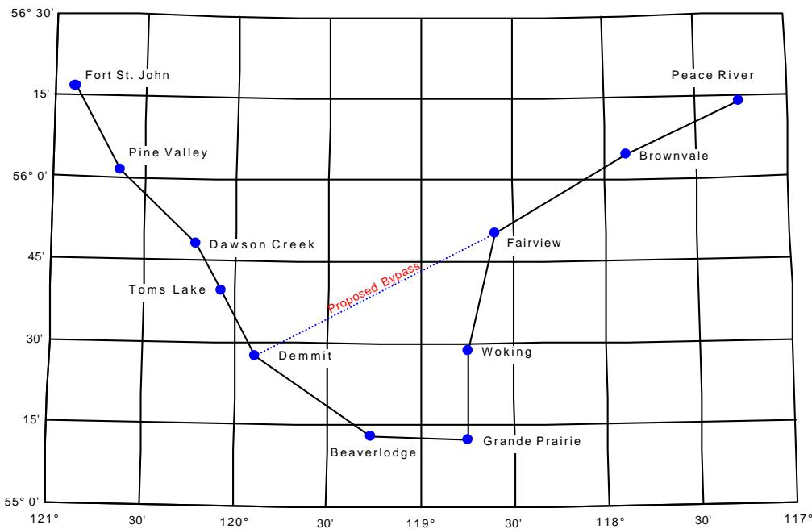
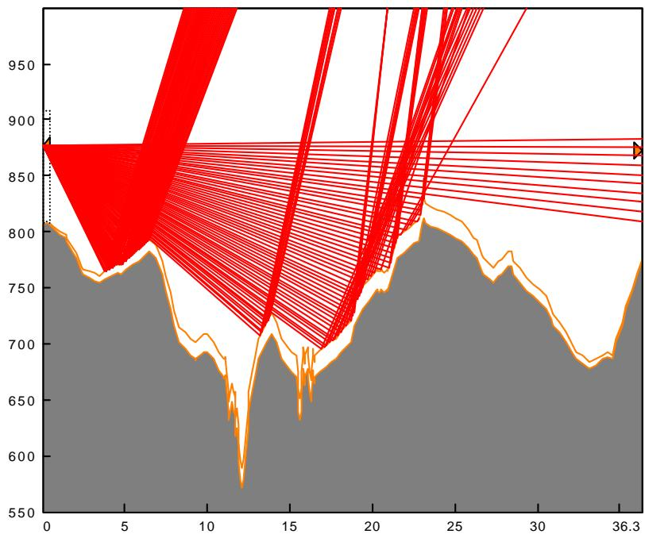
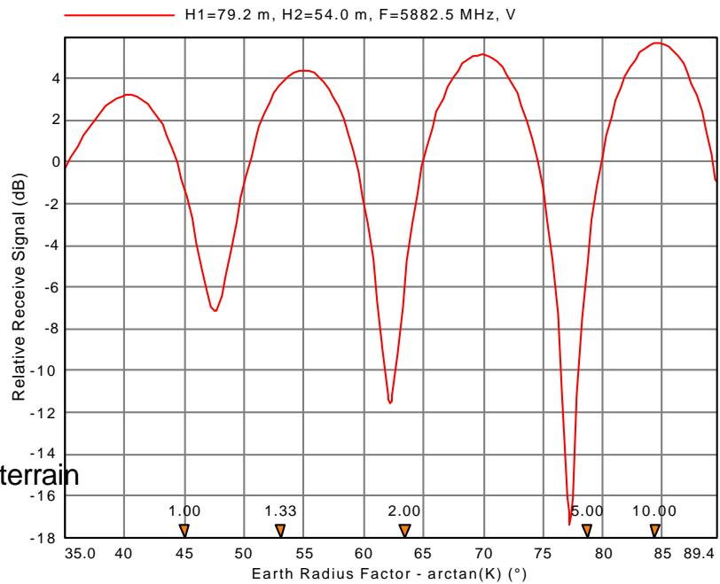
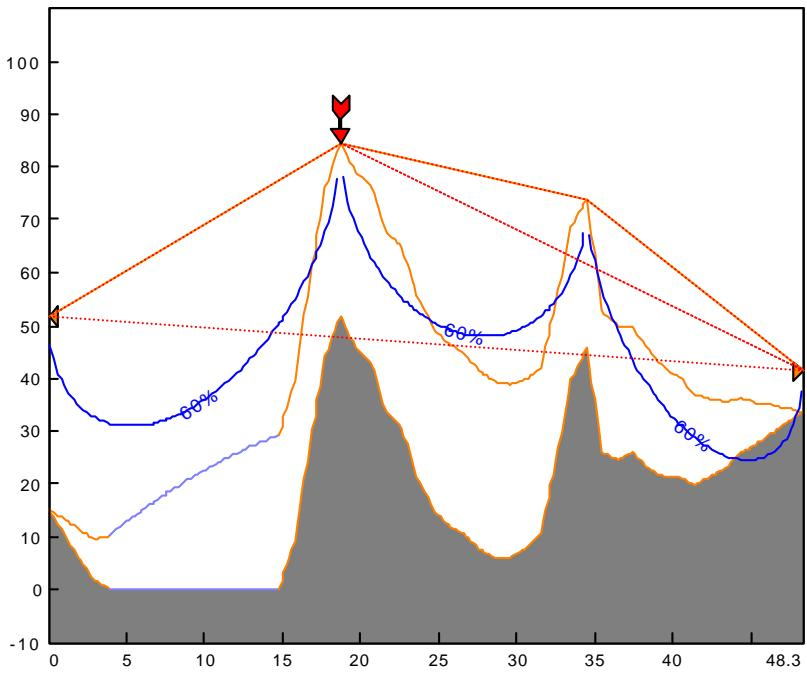
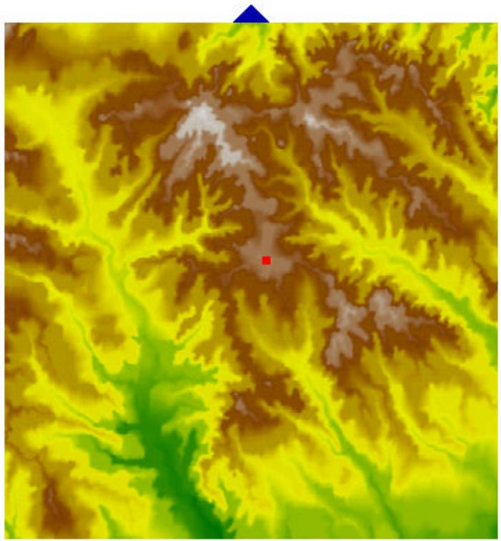

#0 text (532×15)
TỔ CHỨC CHƯƠNG TRÌNH
#1 text (532×18)
MÔ-ĐUN MẠNG
#2 text (532×15)
MÔ-ĐUN TÓM TẮT 3
#3 text (532×16)
MODULE DỮ LIỆU ĐỊA HÌNH 3
#4 text (532×15)
MÔ-ĐUN CHIỀU CAO ANTENNA 4
#5 text (532×16)
MÔ-ĐUN BẢNG TÍNH VI SÓNG 5
#6 text (532×15)
VHF - MÔ-ĐUN BẢNG TÍNH UHF 6
#7 text (532×16)
MODULE ĐA ĐƯỜNG
#8 text (532×15)
MÔ-ĐUN PHẢN XẠ
#9 text (532×16)
MÔ-ĐUN NHỎ XẠ 8
#10 text (532×15)
MÔ-ĐUN PHẠM VI KHU VỰC 9
#11 text (532×16)
MODULE IN HỒ SƠ 10
#12 text (532×15)
TẦM NHÌN ĐỊA HÌNH 10
#13 text (532×16)
CƠ SỞ DỮ LIỆU TRANG WEB 10
#14 text (532×15)
NHIỄU HỆ THỐNG NỘI BỘ 11
#15 text (532×16)
TỆP ĂNG ĂNG và DỮ LIỆU RADIO 11
#16 text (532×15)
CƠ SỞ DỮ LIỆU ĐỊA HÌNH 13
#17 text (532×16)
BÁO CÁO 14
#18 text (532×15)
NGÔN NGỮ 14
#19 text (532×89)
TÀI LIỆU 14
#0 title (532×22)
TỔ CHỨC CHƯƠNG TRÌNH
#1 text (532×80)
Chương trình Pathloss là một công cụ thiết kế đường dẫn toàn diện cho các liên kết vô tuyến hoạt động trong tần số
Chương trình được tổ chức thành tám mô-đun thiết kế đường dẫn, một tín hiệu khu vực
mô-đun bao phủ và mô-đun mạng tích hợp các đường dẫn vô tuyến và phân tích vùng bao phủ
Việc chuyển đổi giữa các mô-đun được thực hiện bằng cách chọn mô-đun từ thanh trình đơn.Các chức năng
và các đặc tính của các mô-đun này được mô tả trong các đoạn sau
#2 title (181×13)
MÔ-ĐUN MẠNG
#3 text (181×136)
Mô-đun Mạng cung cấp một
giao diện địa lý với đường dẫn
thiết kế mô-đun chỉ bằng cách nhấp vào
trên liên kết giữa hai trang web. Cái này
tính năng làm giảm đáng kể
nỗ lực thiết kế cho các dự án lớn. nội bộ
tính toán can thiệp hệ thống
được thực hiện trên Mạng
mô-đun.
#4 title (181×14)
Tính toàn vẹn dữ liệu
#5 text (181×70)
Quản lý sự thay đổi là một nhiệm vụ khó khăn
trên bất kỳ dự án nào. Như thiết kế
tiến hành, mô-đun mạng
theo dõi tất cả các thay đổi được thực hiện trên trang web
tên, tọa độ và địa điểm
#6 text (532×22)
nâng cao và đảm bảo tính toàn vẹn dữ liệu trong tất cả các tệp dữ liệu.
#7 chart (362×236)

#8 title (532×12)
Lớp
#9 text (532×38)
Cả hai liên kết và trang web có thể được chỉ định các lớp khác nhau để chọn lọc làm việc trên các tùy chọn định tuyến khác nhau hoặc
các dải tần.
#10 title (532×13)
Vẽ tỷ lệ
#11 text (532×50)
Các tùy chọn mở rộng được cung cấp để tạo ra một màn hình có thể hoạt động cho một số trang web hoặc mạng với một số
Mạng lưới gồm các thành phố tách biệt nhau, tập trung nhiều đài phát thanh.
liên kết được xử lý bằng cách sử dụng kết hợp giữa việc mở rộng và các lớp
#12 title (532×13)
Nhập dữ liệu trang web
#13 text (532×51)
Một dự án thường bắt đầu bằng cách nhập danh sách tên địa điểm và toạ độ. Điều này có thể được thực hiện bằng
đang nhập tập tin có dấu phẩy được phân cách từ bảng tính hay bất kỳ tập tin văn bản nào. Cũng có thể nhập các trang web và liên kết
từ cơ sở dữ liệu trang web hoặc bằng cách nhập trực tiếp các tập tin dữ liệu Pathloss
#14 title (532×13)
Nhãn liên kết
#15 text (532×35)
Nhãn có thể được vẽ trên các đường liên kết giữa các trang web ở dạng tự do hoặc sử dụng định nghĩa sẵn
đặc tả được cập nhật từ các tập tin dữ liệu mất đường dẫn riêng lẻ. Các định dạng được xác định trước bao gồm
#0 text (532×15)
bất kỳ sự kết hợp nào của các tham số sau:
#1 text (128×12)
ID kênh TX
#2 text (394×13)
tần số TX
#3 text (128×12)
sự phân cực
#4 text (394×11)
khoảng cách
#5 text (532×14)
góc phương vị
#6 title (532×15)
Bản đồ giao cắt
#7 text (532×29)
Báo cáo giao cắt bản đồ cho một liên kết liệt kê các giao điểm theo khoảng cách tính bằng inch / cm
từ góc gần nhất của bản đồ và khoảng cách tích lũy dọc theo hồ sơ
#8 title (532×15)
Báo cáo danh sách trang web
#9 text (532×15)
Báo cáo này cung cấp danh sách tên địa điểm, biển báo, tọa độ và độ cao
#10 title (532×14)
Báo cáo tổng hợp thiết bị - Ứng dụng lò vi sóng
#11 text (532×15)
Báo cáo này đọc các tập tin dữ liệu mất đường dẫn riêng lẻ và tạo ra một bản tóm tắt thiết bị
#12 title (532×14)
Báo cáo kế hoạch tần số - Ứng dụng vi sóng
#13 text (532×29)
Báo cáo này đọc các tập tin dữ liệu mất đường dẫn riêng lẻ và tạo ra một tần số truyền và nhận
tóm tắt bài tập.
#14 title (532×14)
MÔ-ĐUN TÓM TẮT
#15 text (532×30)
Mô-đun tóm tắt là màn hình khởi động mặc định trong chương trình Pathloss và cung cấp các thông tin sau
chức năng:
#16 list (532×86)
- cung cấp một vị trí trung tâm để nhập tham số dữ liệu đường dẫn. Việc tính đường dẫn được thực hiện Mô-đun Bảng làm việc hoàn tất độ tin cậy truyền phân tích. Một số mục như tên địa điểm và dấu hiệu gọi chỉ có thể được nhập vào mô-đun này Các mục khác, chẳng hạn như chiều cao ăng-ten, có thể được thay đổi trong bất kỳ mô-đun thiết kế nào trong chương trình
- cung cấp giao diện cho cơ sở dữ liệu của trang Pathloss để nhập dữ liệu và phân tích nhiễu
- đặt kiểu ứng dụng là vi sóng (điểm tới điểm hay điểm tới điểm) hay VHF-UHF
#17 title (532×15)
MODULE DỮ LIỆU ĐỊA HÌNH
#18 text (532×44)
Một cấu hình địa hình là điều kiện tiên quyết để truy cập hầu hết các mô-đun thiết kế trong chương trình. Nó bao gồm một bảng
Địa hình được tạo trong mô-đun này bằng bất kỳ mô-đun nào trong số các mô-đun này.
các phương pháp sau:
#19 list (532×57)
- • nhập thủ công khoảng cách và độ cao từ bản đồ địa hình
- nhập trực tiếp dữ liệu độ cao từ bản đồ địa hình bằng máy tính bảng số hoá
- chuyển đổi dữ liệu độ cao khoảng cách trong các tệp văn bản từ các nguồn khác
- dữ liệu độ cao khoảng cách được đọc từ cơ sở dữ liệu địa hình
#20 text (532×43)
Thiết kế đã được tối ưu hoá để nhập và chỉnh sửa dữ liệu thủ công.Các cấu trúc đơn lẻ (cây, toà nhà hoặc
Tháp nước) hoặc phạm vi của các cấu trúc có thể được thêm vào hồ sơ
#0 title (532×20)
Tính năng đặc biệt
#1 title (532×13)
Hệ tọa độ lưới
#2 text (532×48)
Tọa độ địa điểm có thể được nhập dưới dạng vĩ độ và kinh độ hoặc dưới bất kỳ định dạng tọa độ lưới nào được liệt kê
dưới đây. Việc vào theo định dạng kinh độ hoặc lưới sẽ tự động được chuyển đổi sang định dạng kia
định dạng.
#3 text (236×15)
UTM (Máy đo ngang đa năng)
#4 text (236×12)
Gauss Nam Phi phù hợp
#5 text (236×15)
Lưới pháp lệnh của Vương quốc Anh
#6 text (532×19)
Gauss Kruger (sắp có)
#7 text (286×14)
Lưới điện quốc gia Thụy Sĩ
#8 text (286×13)
Lưới New Zealand
#9 text (286×15)
Lưới Ailen
#10 title (532×14)
Chuyển đổi giữa các mốc thời gian
#11 text (532×34)
Tọa độ địa điểm có thể được chuyển đổi từ dữ liệu này sang dữ liệu khác (ví dụ NAD-27 sang NAD-83).
bao gồm các định nghĩa cho 120 mốc thời gian khác nhau.
#12 title (532×14)
Sửa đổi hồ sơ địa hình
#13 list (532×63)
- Địa hình được lấy từ bản đồ địa hình thường hiển thị những ngọn đồi và thung lũng phẳng trên cùng. tự động tăng cường bởi một phần trăm đã xác định của khoảng đường viền
- Cấu hình có thể được kéo dài hoặc thu nhỏ để phù hợp với khoảng cách tính từ các tọa độ
- Các điểm dư thừa có thể bị loại bỏ khỏi hồ sơ địa hình
#14 title (532×13)
Góc khảo sát
#15 text (532×47)
Góc dọc từ một trong hai vị trí đến bất kỳ điểm nào trên hồ sơ có thể được tính toán xem xét các thiết bị
chiều cao và giá trị K cho ánh sáng. Góc đo được có thể được nhập vào để hiển thị độ sửa chữa cần thiết để
độ cao tại điểm đã chọn.
#16 title (532×19)
MÔ-ĐUN CHIỀU CAO ANTENNA
#17 text (252×93)
Mô-đun này xác định độ cao ăng-ten
đáp ứng tiêu chí giải phóng mặt bằng được chỉ định là
hệ số bán kính trái đất (K), tỷ lệ phần trăm của bán kính đầu tiên
Bán kính vùng Fresnel và chiều cao cố định tùy chọn.
Hai tiêu chí giải phóng mặt bằng riêng biệt có thể được chỉ định
cho cả anten chính và anten đa dạng.
#18 text (252×62)
Độ cao anten có thể thay đổi theo bất kỳ
sự kết hợp hoặc chiều cao có thể được tối ưu hóa
dựa trên giá trị tối thiểu của tổng của
bình phương chiều cao của anten.
#19 title (252×20)
Tính năng đặc biệt
#20 title (252×12)
Cấu trúc
#21 text (252×19)
Vị trí của các điểm tới hạn có thể không
#22 chart (291×241)

#0 text (532×35)
Hiển thị khi hồ sơ được tạo trong mô-đun Dữ liệu địa hình. Một cấu trúc có thể được thêm vào, chỉnh sửa hoặc thậm chí
được di chuyển trực tiếp trong mô-đun Antenna Heights.
#1 title (532×13)
Tính toán khoảng trống trên đường dẫn hiện có
#2 text (532×36)
Tiêu chuẩn độ thanh thải trên một đường dẫn hiện có có thể được xác định tương tác bằng cách nhập giá trị K hoặc a
% bán kính vùng Fresnel đầu tiên. Tham số còn lại sẽ được tính trên toàn bộ đường dẫn
#3 title (532×13)
Hiển thị khoảng trống
#4 text (532×21)
Thông quan có thể được hiển thị tại bất kỳ điểm nào chi tiết đóng góp của các tiêu chí thông quan kiểm soát
#5 title (532×13)
Báo cáo giải phóng mặt bằng và định hướng
#6 text (532×49)
Các báo cáo này cho thấy tất cả các điểm nằm trong giới hạn dung sai quy định của tiêu chuẩn thanh thải.
Góc phương vị và góc thẳng đứng được đưa ra cùng với sự thay đổi của góc thẳng đứng cho một loạt các giá trị của
K.
#7 title (532×14)
Báo cáo cân bằng chiều cao ăng-ten
#8 text (532×34)
Chiều cao ăng-ten tại một địa điểm được thay đổi theo từng gia tăng cố định và chiều cao ăng-ten tương ứng tại
trang web khác được báo cáo.
#9 title (532×21)
MÔ-ĐUN BẢNG TÍNH VI SÓNG
#10 text (532×49)
Một phân tích truyền hoàn chỉnh được thực hiện trong mô-đun Bảng công việc vi sóng. Mục nhập dữ liệu
các biểu mẫu được truy cập bằng cách nhấn vào một biểu tượng thiết bị. Bảng tính được tính và kết quả được
hiển thị khi quá trình nhập dữ liệu diễn ra.
#11 title (532×14)
Phương pháp tin cậy
#12 text (532×21)
Độ tin cậy truyền đa đường có thể được tính bằng bất kỳ phương pháp nào sau đây
#13 list (532×120)
- Vigants-Barnett factor, yếu tố khí hậu và độ nhám địa hình). trên bất kỳ đoạn nào của hồ sơ tham chiếu đến mực nước biển hoặc đến một bình phương nhỏ nhất phù hợp với địa hình
- ITU-R P.530-6 (độ nghiêng đường, góc gặm cỏ và hệ số địa khí hậu ). Góc gặm cỏ là được tính bằng cách xác định mặt phẳng phản xạ chi phối trên mặt cắt
- ITU-R P.530-7 (độ nghiêng đường đi và hệ số địa khí hậu)
- hệ số KQ
- Hệ số KQ bao gồm độ nhám địa hình. Số mũ tần số và khoảng cách có thể được đặt cho tiêu chuẩn khu vực cụ thể.
#14 text (532×22)
Độ tin cậy truyền có thể được biểu thị là sẵn có hoặc không có sẵn bằng cách sử dụng các quy ước sau đây
#15 list (532×63)
- Tổng thời gian dưới mức quy định cho tháng và năm tồi tệ nhất
- Tháng không có sẵn tồi tệ nhất và giây bị xói mòn nghiêm trọng (SES) bằng cách sử dụng các tiêu chí mờ dần mà kéo dài hơn 10 giây liên tiếp được coi là không có sẵn hệ thống. thời gian dưới mức được coi là SES.
#16 text (532×20)
Hệ thống cải tiến đa dạng
#0 text (532×28)
Các tính toán cải thiện đa dạng sau đây được cung cấp cho chuyển đổi băng cơ sở và kết hợp IF
hệ thống.
#1 list (532×63)
- Không gian đa dạng
- Đa dạng góc độ
- Đa dạng tần số cho 1 cho 1 và 1 cho N hệ thống
- Đa dạng lai - một hệ thống đa dạng tần số được trang bị đa dạng không gian ở một đầu
#2 title (532×13)
Suy giảm mưa
#3 text (532×28)
Mất điện do mưa cường độ cao có thể được tính toán bằng cách sử dụng Crane hoặc phương pháp ITU-R p. 530 bằng bất kỳ phương pháp nào trong số
các tập tin thống kê mưa sau đây:
#4 list (532×64)
- Vùng mưa cần cẩu
- vùng mưa hạc sửa đổi (1966)
- Vùng mưa của ITU
- Dữ liệu của Canada về 47 địa điểm thăm dò vô tuyến
#5 title (532×13)
Bộ lặp thụ động
#6 text (532×78)
Liên kết bộ lặp thụ động có thể được tạo bằng cách sử dụng bộ phản xạ hình chữ nhật đơn/hai hoặc ngược lại
Một đường dẫn có thể có tối đa ba bộ lặp thụ động thuộc mọi loại. Các hồ sơ đường dẫn riêng biệt được ưu tiên trước hết.
- Các hồ sơ được lập cho mỗi liên kết thụ động và phân tích để giải phóng mặt bằng. Các hồ sơ sau đó được hợp nhất với nhau trong
Mô-đun Bảng làm việc vi sóng để tạo thành thiết kế thụ động hoàn chỉnh, bao gồm truyền và
phân tích độ tin cậy lan truyền
#7 title (532×13)
Mẫu
#8 text (532×35)
Việc nhập dữ liệu có thể được đơn giản hoá bằng cách tải các tham số thiết bị từ một tập tin dữ liệu mất đường dẫn khác.
có thể được sử dụng như một mẫu.
#9 title (532×12)
Bảng tra cứu
#10 text (532×35)
Bảng tra cứu có thể được tạo cho ăng-ten, đường truyền, radio và các phân bổ kênh TX. Dữ liệu
có thể được nhập từ tập tin dữ liệu ăng-ten và radio vào bảng tra cứu hoặc trực tiếp vào bảng làm việc
#11 title (532×22)
VHF - MÔ-ĐUN BẢNG TÍNH UHF
#12 text (532×34)
Một bảng tính riêng biệt có sẵn cho các ứng dụng trong dải tần số VHF-UHF và di động.
định dạng nhập dữ liệu được thiết kế riêng cho các thông số kỹ thuật thiết bị điển hình được sử dụng trong các ứng dụng này
#13 text (532×63)
Tăng ăng-ten trong các dải tần số này thường được chỉ định trong dBd (dB trên lưỡng cực lý thuyết) và
được gắn với một ăng-ten boresight nằm ngang không giống như ăng-ten vi sóng cung cấp cho dọc
Phân tích truyền dẫn xem xét các góc ăng-ten ngang và dọc sử dụng ăng-ten
các tập tin dữ liệu.
#14 text (532×78)
Mô-đun Bảng công việc VHF-UHF bao gồm các bảng tra cứu cho ăng-ten, radio và đường dây truyền tải và
dùng tập tin dữ liệu ăng-ten. Tính năng mẫu cũng được triển khai để thuận tiện cho việc nhập dữ liệu
#0 title (251×23)
MODULE ĐA ĐƯỜNG
#1 text (251×64)
Kỹ thuật dò tia được sử dụng để phân tích
các đặc điểm phản chiếu của một con đường và
mô phỏng các điều kiện lan truyền bất thường. các
màn hình hoạt động ở hai chế độ
#2 title (251×13)
Độ dốc không đổi
#3 text (251×106)
Một biểu diễn trái đất cong được sử dụng và tất cả
Đường đi của
tia phản xạ thể hiện tính nhạy của đường đi
đến một sự phản chiếu gương và giúp xác định
phạm vi của mặt phẳng phản xạ. Ở chế độ này,
sự thay đổi tín hiệu như là một hàm của chiều cao ăng-ten
có thể được hiển thị
#4 title (251×13)
Độ dốc thay đổi
#5 text (532×35)
Người dùng định nghĩa gradient khúc xạ hoặc K là
Một hàm của chiều cao.Các màn hình sử dụng một biểu diễn trái đất phẳng và các tia được vẽ như các đường cong
#6 chart (292×242)

#7 title (532×13)
Định dạng hồ sơ
#8 text (532×35)
Một màn hình hướng dẫn minh hoạ khái niệm bán kính trái đất hiệu quả có sẵn trong
mô-đun đaath. Hồ sơ có thể được hiển thị theo hầu hết mọi định dạng
#9 title (532×21)
MÔ-ĐUN PHẢN XẠ
#10 text (532×30)
Mô-đun Phản ánh phân tích sự thay đổi trong mức độ tín hiệu nhận trên các đường dẫn có thể hỗ trợ hình học
Tín hiệu nhận được tính như là một hàm của bất kỳ biến sau
#11 text (128×14)
Chiều cao ăng-ten của trang 1
#12 text (128×13)
Tần số
#13 text (394×13)
Chiều cao anten của site 2
#14 text (113×29)
hệ số bán kính trái đất
(K)
#15 text (251×20)
Mức thủy triều
#16 text (251×43)
Việc tính toán bắt đầu bằng cách xác định điểm cuối
của mặt phẳng phản xạ. Mặt phẳng phản xạ có thể
được xây dựng bằng một trong các phương pháp sau:
#17 list (251×61)
- bình phương nhỏ nhất phù hợp với địa hình trên phạm vi xác định
- một mặt phẳng chỉ được xác định bởi các điểm cuối
- một mặt phẳng có độ cao không đổi
#18 text (251×64)
Ảnh hưởng của sự phân kỳ (sự tán xạ của một
tín hiệu phản xạ do độ cong của trái đất),
độ gồ ghề, lớp phủ mặt đất và mất khoảng trống có thể
được đưa vào tính toán. Ăng-ten
#19 chart (292×237)

#0 text (532×23)
phân biệt đối xử được tự động phân tích thành kết quả sử dụng 3 dB chiều rộng chùm
#1 text (532×50)
Một bảng tính phân tán cho thấy sự cố biên độ tương đối và độ trễ của tín hiệu phản xạ
Bất kỳ các thông số (tần số, chiều cao ăng-ten, K, chiều rộng chùm tia...) có thể được thay đổi để xác định
sự thay đổi tương ứng trong biên độ tín hiệu phản xạ.
#2 title (253×24)
MÔ-ĐUN NHỎ XẠ
#3 title (253×13)
Thuật toán nhiễu xạ
#4 text (253×37)
Tính toán tổn thất nhiễu xạ đầu tiên được mô tả
địa hình theo các loại sau:
#5 list (253×136)
- lưỡi dao đơn
- gần cạnh dao đơn hoặc bị cô lập trở ngại
- nhiều cạnh dao (sử dụng Epstein- phương pháp Peterson hoặc Deygout)
- mất tiền cảnh giữa ăng-ten và chân trời của nó (chiều cao - tăng)
- địa hình không đều mặc định (Longley-Rice) hoặc nhiễu xạ đất thô
#6 chart (290×242)

#7 text (253×27)
Ba thuật toán nhiễu xạ tự động là
cung cấp:
#8 list (532×42)
- Mô hình đất gồ ghề tích hợp TIREMterrain
- NSMA Hiệp hội quản lý quang phổ quốc gia
- Mất đường dẫn một thuật toán có thể cấu hình người dùng
#9 text (532×36)
Mỗi thuật toán này tuân theo một tập hợp các quy tắc để mô tả địa hình và là cơ sở của biến
tính toán tham số, vùng phủ sóng và phân tích nhiễu.
#10 text (532×27)
Trên đường đi của vùng Fresnel đầu tiên có độ lệch dưới 60%, tổn thất được xác định theo công thức sau :
phương pháp:
#11 list (532×52)
- một loạt các chướng ngại vật bị cô lập được xác định bởi các giao điểm của vùng Fresnel 60% với địa hình
- Gạo Longley
- Longley-Lý luận
#12 title (532×13)
Tính toán tổn thất nhiễu xạ tương tác
#13 text (532×28)
Ngoài ba thuật toán tự động, người dùng có thể phân tích bất kỳ phần nào của đường dẫn bằng bất kỳ
kết hợp các thuật toán cơ bản sau:
#14 table (374×42)
| knife edge | isolated obstacle (knife edge with a radius) |
| average diffraction | 2 ray optics |
| height gain | Longley and Rice |
#15 text (532×14)
Tính năng này cho phép tính toán như:
#16 list (532×36)
- thay thế địa hình bất thường bằng một chướng ngại vật hiệu quả
- xác định tổn thất từ một điểm phản xạ tới một trong hai vị trí
#0 title (532×13)
Tổn thất phân tán tầng đối lưu - Tổn thất kết hợp
#1 text (532×37)
Trên các đường bị tắc nghẽn, tổn thất tán xạ tầng đối lưu được tự động tính toán và kết hợp với
mất nhiễu xạ.
#2 title (532×14)
Sự thay đổi thời gian
#3 text (532×51)
Trên đường không nhìn thấy, sự thay đổi thời gian của tổn thất truyền được phân tích bằng cách sử dụng thống kê
( 1) Tên gọi của đường cong này được ghi trong ghi chú kỹ thuật số 101. Tập hợp đầy đủ của các đường cong này đã được số hóa thành
chương trình.
#4 title (532×13)
Thông số biến
#5 text (532×14)
Tổn thất nhiễu xạ có thể được tính như là một hàm của bất kỳ tham số nào sau đây
#6 text (200×14)
chiều cao ăng-ten của trang 1 hoặc trang 2
#7 text (200×14)
tần số
#8 text (322×14)
hệ số bán kính trái đất (K)
#9 text (322×21)
khoảng cách dọc theo con đường
#10 title (532×21)
MÔ-ĐUN PHẠM VI KHU VỰC
#11 text (183×71)
Phân tích vùng phủ sóng
đòi hỏi một cơ sở dữ liệu địa hình. A
hoàn toàn tự động 3 bước
quá trình được sử dụng để tạo ra khu vực
vùng phủ sóng và hiển thị đường ngắm.
#12 text (183×27)
Bước 1 tạo địa hình xuyên tâm
dữ liệu hồ sơ
#13 text (183×54)
Bước 2 tính toán tổng hợp
nhiễu xạ và tán xạ tầng đối lưu
mất mát và các góc dọc dọc theo
mỗi bán kính.
#14 text (183×65)
Bước 3 chỉ định radio và
thông số ăng-ten, mức tín hiệu
tiêu chí và thời gian, địa điểm
những hạn chế về sự biến đổi.
#15 text (183×137)
Một phép tính có thể được sửa đổi bằng cách
quay lại bước thích hợp
và thay đổi yêu cầu
thông số .The phân tích
xem xét các góc độ cao trên
đường ngắm hoặc đường chân trời
góc trên những con đường bị cản trở. Căn cứ
ăng-ten trạm có thể bao gồm
nghiêng xuống cơ khí.
#16 chart (354×336)

#17 text (532×37)
Các màn hình được trình bày dưới dạng các đường xuyên tâm được mã hoá màu hoặc màn hình được mã hoá màu đặc.
và hiển thị mức tín hiệu có sẵn ở một trong hai định dạng.
#0 title (532×15)
Vùng phủ sóng đa địa điểm
#1 text (532×61)
Cả hai dòng tầm nhìn và tính toán bao phủ tín hiệu có thể được nhập vào màn hình mạng để phân tích
Các trang web này có thể được bật và tắt có chọn lọc để xác định hiệu quả của chúng trong
mỗi trình bày bao phủ của trang có thể được đặt để hiển thị hoặc bao phủ tín hiệu hoặc dòng của
tầm nhìn.
#2 title (532×20)
MODULE IN HỒ SƠ
#3 text (532×13)
Ba định dạng hồ sơ phổ biến được cung cấp:
#4 text (532×44)
một hiển thị trái đất phẳng với hệ số bán kính trái đất (K) được biểu diễn dưới dạng cấu hình thứ cấp phía trên mặt phẳng
Các vùng Fresnel được hiển thị trên các tia giữa các ăng-ten. Bốn giá trị khác nhau của
Tham chiếu vùng K và Fresnel có thể được hiển thị.
#5 text (532×33)
hiển thị trái đất cong với trục ngang thẳng hoặc cong có sẵn bằng cách sử dụng một
giá trị của K với bốn tham chiếu vùng Fresnel.
#6 text (532×32)
Trên các ứng dụng đa dạng không gian, các tham chiếu vùng Fresnel khác nhau có thể được chỉ định cho chính và
sự kết hợp anten đa dạng.
#7 title (532×13)
Khối tiêu đề
#8 text (532×32)
Có thể bao gồm một khối tiêu đề tùy chọn cho thông tin cụ thể của dự án
#9 title (274×20)
TẦM NHÌN ĐỊA HÌNH
#10 text (274×118)
Chế độ xem địa hình ba chiều có sẵn trong
các mô-đun Mạng và Dữ liệu Địa hình. trong
Mô-đun mạng, người dùng chỉ cần xác định một
vùng hình chữ nhật trên màn hình để hiển thị
địa hình. Các trang web mới có thể được thêm vào địa hình
xem. Việc thực hiện dựa trên Mặt trời
Thư viện OPENGL của microsystems được cung cấp kèm theo
Windows 95/98 và Windows NT.
#11 title (274×20)
CƠ SỞ DỮ LIỆU TRANG WEB
#12 text (274×89)
Tất cả các tùy chọn của chương trình bao gồm một giao diện trong
các mô-đun Tóm tắt và Mạng cho một trang web
cơ sở dữ liệu. Bất kỳ số lượng cơ sở dữ liệu trang web có thể được
được tạo ra. Phần ví dụ của CD-ROM
bao gồm cơ sở dữ liệu vi sóng hoàn chỉnh cho
Canada.
#13 image (252×272)

#14 text (532×14)
Cơ sở dữ liệu bao gồm các bảng Borland Paradox sau:
#15 text (164×13)
chủ sở hữu và người điều hành
#16 text (358×12)
hồ sơ trang web
#17 text (164×16)
hồ sơ trạm
#18 text (358×12)
hồ sơ liên kết
#0 text (165×12)
bản ghi kênh truyền
#1 text (357×18)
hồ sơ lặp lại thụ động
#2 text (532×49)
Thiết kế bảng đã được tối ưu hoá cho các tính toán giao thoa bằng cách sử dụng tập tin dữ liệu mất đường dẫn hiện tại
Phân tích này giống hệt với phân tích can thiệp nội bộ hệ thống mô tả trong
đoạn văn sau đây.
#3 text (532×33)
Do mối quan hệ giữa các bảng, không thể đơn giản chuyển dữ liệu từ cơ sở dữ liệu hiện có
vào cơ sở dữ liệu trang Pathloss. Liên hệ với CTE để biết thêm thông tin.
#4 title (532×21)
NHIỄU HỆ THỐNG NỘI BỘ
#5 text (532×105)
Tính toán giao thoa mang phân tích xuống đến sự suy giảm ngưỡng tổng hợp của nạn nhân
Trong khi đó, các nhà quản lý của các công ty khác lại không thể nhận được các tín hiệu từ các máy thu do có nhiều bộ can thiệp. Kết hợp với Bảng làm việc vi sóng, bạn có thể thấy hiệu quả của việc sử dụng các bộ thu này.
nhiễu khi mất điện. Tập tin dữ liệu ăng-ten được dùng để xác định sự phân biệt ăng-ten.
tập tin dữ liệu vô tuyến được dùng để tính toán sự cải tiến bộ lọc (hệ số giảm nhiễu).
nhiễu (T-I) hoặc đường cong yếu tố giảm nhiễu, có sẵn cho người can thiệp nạn nhân
kết hợp, những điều này sẽ được sử dụng. Nếu không, phổ truyền của nhiễu sẽ được cuộn lại
chống lại tính chọn lọc nhận. Nếu không có sẵn, mặt nạ mặc định sẽ được dùng
#6 text (532×33)
Mô-đun Mạng được dùng để tính toán nhiễu nội hệ thống. Tính toán chỉ được thực hiện cho
các trang web và liên kết trên các lớp hiển thị.
#7 title (532×14)
Báo cáo chi tiết trường hợp
#8 text (532×62)
Báo cáo này cho thấy một phân tích hoàn chỉnh cho mỗi trường hợp can thiệp. Tất cả các trường hợp cho mỗi máy thu là
tổng hợp và tính toán sự suy giảm ngưỡng hỗn hợp. Nếu một trường hợp can thiệp là một OHLOSS
- Đối với các dự án có yêu cầu về kỹ thuật, công nghệ, vật liệu, thiết bị, vật tư, chất, có thể tính toán trực tiếp và tổng hợp kết quả vào báo cáo.
Tập tin dữ liệu radio và ăng-ten dùng trong tính toán có thể được hiển thị
#9 title (532×13)
Báo cáo tóm tắt và tham khảo chéo
#10 text (532×35)
Có hai phiên bản của báo cáo tóm tắt. Báo cáo tham chiếu chéo được thụt lề như một định hướng
hỗ trợ cho báo cáo chi tiết trường hợp toàn diện hơn.
#11 title (532×13)
Báo cáo vi phạm Cao-Thấp
#12 text (532×33)
Báo cáo này liệt kê các tần số được sử dụng tại mỗi địa điểm và xác định bất kỳ vi phạm cao thấp trong
kHz. Quy ước đặt tên ID kênh được sử dụng làm tiêu chí vi phạm
#13 title (532×20)
TỆP ĂNG ĂNG và DỮ LIỆU RADIO
#14 title (532×15)
Tệp dữ liệu ăng-ten vi sóng
#15 text (532×90)
Một phân tích nhiễu sóng vi ba đòi hỏi phong bì mô hình bức xạ ngang cho bốn phân cực
các tổ hợp (HH, VV, HV và VH).
trong đó ăng-ten cơ sở có một hướng cố định. Dữ liệu này được chứa trong tập tin dữ liệu ăng-ten riêng biệt
cho mỗi kiểu ăng-ten. Những tập tin này bắt đầu bằng tập tin ASCII theo định dạng tiêu chuẩn được dùng bởi hầu hết ăng-ten
Các nhà sản xuất và chuyển đổi sang định dạng nhị phân bên trong chương trình Pathloss.Tập tin chứa các cơ bản
thông số kỹ thuật ăng-ten và phong bì mẫu bức xạ và cũng có thể bao gồm mẫu bức xạ dọc
#0 text (532×18)
dữ liệu.
#1 text (532×33)
Hiện tại, chương trình bao gồm các tệp ASCII và ăng ten nhị phân cho khoảng 3500 vi sóng
mô hình anten.
#2 title (532×14)
Tệp dữ liệu sóng vô tuyến vi sóng
#3 text (532×32)
Để tính toán sự xuống cấp của một ngưỡng thu kỹ thuật số trong sự hiện diện của tín hiệu nhiễu của
bất kỳ băng thông và điều chế nào, cần có các tham số sau:
#4 list (532×62)
- 1 0 ^ { - 6 } Ngưỡng BER
- ngưỡng tỷ lệ nhiễu (T-I) cho một can thiệp kênh đồng điều chế và dung lượng giống nhau
- băng thông kênh
- Băng thông 3 dB của phổ phát
#5 text (532×13)
Các đường cong sau đây sẽ được sử dụng nếu có:
#6 list (532×103)
- phổ máy phát so với tần số
- Tỷ lệ T-I so với tần số cho một điều chế giống nhau và can thiệp dung lượng
- Tỷ lệ T-I so với tần số của nhiễu CW
- Tỷ lệ T-I so với tần số cho các bộ can thiệp với các điều chế và năng lực khác nhau
- Yếu tố giảm nhiễu so với tần số cho một điều chế giống như và khả năng can thiệp
- Yếu tố giảm nhiễu xạ so với tần số cho các nhiễu với các điều chế khác nhau và năng lực
#7 text (532×61)
Dữ liệu trên và các thông số kỹ thuật chung khác được chứa trong các tệp dữ liệu vô tuyến.Các tệp này bắt đầu dưới dạng ASCII
Tập tin sẽ được chuyển đổi sang định dạng nhị phân trong chương trình Pathloss. Việc chuyển đổi tập tin nhị phân sẽ
tạo mặt nạ chọn lọc và truyền phổ mặc định sẽ được dùng để xác định bộ lọc
cải thiện nếu các đường cong yêu cầu không có sẵn.
#8 text (532×34)
Hiện tại, chương trình bao gồm các tệp dữ liệu vô tuyến nhị phân và ASCII cho khoảng 120 đài phát thanh kỹ thuật số
mô hình từ các nhà sản xuất lớn.
#9 title (532×18)
Định nghĩa tỷ lệ ngưỡng can thiệp (T-I)
#10 text (532×47)
Tỷ lệ T-I được định nghĩa là tỷ lệ của mong muốn đến công suất tín hiệu không mong muốn làm suy giảm
Thiết bị thu kỹ thuật số ngưỡng 10-6 BER bằng 1 dB. Ưu điểm của T-I là sự khác biệt về ngưỡng
do tốc độ bit, kỹ thuật điều chế và con số nhiễu, tất cả đều được tính đến
#11 text (532×90)
Đo T-I cho một radio kỹ thuật số được thực hiện bằng cách làm mờ máy thu đến ngưỡng 10-6 BER
điểm. Mức tín hiệu sau đó được tăng lên 1 dB và nhiễu được tiêm cho đến khi BER 10-6 trở lại
đạt được trên liên kết. Tỷ lệ của mức công suất ban đầu của tín hiệu nhận mong muốn với nhiễu
Công suất là tỷ lệ T-I. Lưu ý rằng giá trị này sẽ khác nhau đối với các can thiệp khác nhau, đặc biệt là nếu
tín hiệu can thiệp được bù đắp tần số từ và/hoặc có phổ rộng hơn so với của thiết bị nhận nạn nhân
băng thông.
#12 title (532×19)
Tệp dữ liệu ăng-ten VHF-UHF
#0 text (532×107)
Các mẫu bức xạ theo chiều dọc và ngang là cần thiết trong phân tích vùng phủ sóng tín hiệu nhận và trong
một ứng dụng điểm đến đa điểm trong đó ăng-ten trạm gốc có một hướng cố định. Dữ liệu này là
chứa trong tập tin dữ liệu ăng-ten VHF-UHF riêng biệt cho mỗi kiểu ăng-ten. Những tập tin này bắt đầu là ASCII
tập tin theo định dạng đề nghị của NSMA và được chuyển đổi sang định dạng nhị phân bên trong Pathloss
chương trình. Tập tin chứa thông số kỹ thuật ăng-ten cơ bản và bức xạ ngang và dọc
( 1) Các mẫu của ăng-ten vi sóng. Không giống như các mẫu của ăng-ten vi sóng là các mẫu bao, các mẫu của VHF
Ăng-ten UHF là mẫu điển hình.
#1 text (532×36)
Chương trình bao gồm khoảng 1500 tập tin dữ liệu ăng-ten VHF-UHF cho một số nhà sản xuất trong
dải tần từ 50 đến 2500 MHZ.
#2 title (532×22)
CƠ SỞ DỮ LIỆU ĐỊA HÌNH
#3 text (532×37)
Một cơ sở dữ liệu địa hình là cần thiết cho phân tích vùng phủ sóng, tính toán OHLOSS trong phân tích nhiễu
và đặc điểm xem địa hình. Các cấu hình đường dẫn đơn cũng có thể được tạo từ một cơ sở dữ liệu địa hình
#4 title (532×13)
Cơ sở dữ liệu sơ cấp và thứ cấp
#5 text (532×136)
Chương trình Pathloss hỗ trợ cơ sở dữ liệu chính và phụ. Điều này cho phép độ phân giải cao
cơ sở dữ liệu với độ bao phủ một phần sẽ được bổ sung với một cơ sở dữ liệu thứ hai có độ phân giải thấp hơn, nhưng
Một ví dụ về tình trạng này là USGS 1 độ và độ cao kỹ thuật số 7,5 phút
DEM 1 độ có độ phân giải 3 cung giây cho vĩ độ nhỏ hơn
50E và có độ bao phủ hoàn chỉnh. DEM 7,5 phút có độ phân giải 30 mét. Độ bao phủ của
sau này không đầy đủ. Người ta có thể chỉ định DEM 7,5 phút là cơ sở dữ liệu chính và 1 độ
DEM là thứ yếu. Một hồ sơ địa hình sẽ được tạo ra từ dữ liệu 7,5 phút, nơi nó là
sẵn sàng, và mặc định cho dữ liệu 1 độ nếu không có sẵn tập tin cần thiết. Chương trình tạo một
báo cáo về cách sử dụng tập tin chính và phụ trên hồ sơ
#6 title (532×13)
Datum - Chuyển đổi tọa độ
#7 text (532×37)
Nếu một cơ sở dữ liệu dựa trên dữ liệu WGS84, các toạ độ địa lý của người dùng sẽ được tự động
được chuyển đổi sang mốc thời gian này cho tất cả các hoạt động cơ sở dữ liệu.
#8 title (532×14)
Các định dạng cơ sở dữ liệu địa hình được hỗ trợ
#9 text (532×13)
Các định dạng cơ sở dữ liệu địa hình sau đây hiện được hỗ trợ.
#10 list (532×178)
- USGS 1:250.000 DEMS (3 cung giây)
- Dữ liệu USGS 30 và 10 mét cho bản đồ bốn trong 7,5 phút
- Dữ liệu địa hình 30 cung giây toàn cầu USGS GTOPO30
- DTED (Dữ liệu độ cao địa hình kỹ thuật số - định dạng DMA của Hoa Kỳ)
- CRC - Hội đồng nghiên cứu Canada)
- ESRI (ArcInfo) GRIDASCII ở định dạng địa lý và UTM
- Tiêu chuẩn trao đổi quốc gia Nam Phi
- MDT200 và MDT25 - Tây Ban Nha
- Dữ liệu địa hình của Odyssey ở các định dạng lưới UTM, Thuỵ Sĩ, Ailen và Vương quốc Anh
- Phoenix -Airtouch Định dạng di động
- Micropath - dữ liệu địa hình 3 giây
- AUSLIG - Dữ liệu địa hình 3 giây của Úc
#0 title (532×13)
Các định dạng đang được phát triển
#1 list (532×60)
- Dữ liệu USGS 30 và 10 mét được cung cấp theo định dạng SDTS
- Khảo sát quân sự của Vương quốc Anh
- Hành tinh MSI
- DGM - Đức
#2 text (532×14)
Dữ liệu địa hình mất đường (sắp có - nâng cấp miễn phí)
#3 text (532×30)
Cả USGS 1: 250.000 3 arc second DEMS và GTOPO30 toàn cầu 30 arc second dữ liệu địa hình là
có sẵn miễn phí từ trang web USGS.
#4 text (532×46)
Để thuận tiện cho người dùng Pathloss, chương trình gửi dữ liệu GTOPO30 của USGS cho thế giới (trừ
Các file dữ liệu tiêu đề và độ cao được cung cấp theo định dạng USGS gốc trên
hai đĩa CD-ROM.
#5 text (532×45)
Đối với người dùng Pathloss ở Hoa Kỳ, chương trình gửi dữ liệu địa hình nén 3 giây cho
Hoa Kỳ và Alaska trên một đĩa CD-ROM duy nhất. Dữ liệu này đã được lấy trực tiếp từ USGS
1: 250.000 DEMS. Chương trình Pathloss đọc dữ liệu đã nén trực tiếp
#6 title (532×17)
BÁO CÁO
#7 text (532×59)
Tất cả các mô-đun bao gồm một lựa chọn báo cáo với một xem trước in hiển thị các trang và có thể bao gồm của bạn
Các báo cáo có thể được in hoặc sao chép dưới dạng văn bản định dạng vào phần mềm soạn thảo văn bản. Tất cả các báo cáo đều có thể được in ra hoặc sao chép vào phần mềm soạn thảo văn bản.
màn hình profile cũng có thể được sao chép để tạo các báo cáo tùy chỉnh. Các báo cáo có thể được lưu trong RTF
(Định dạng văn bản có định dạng) hoặc dưới dạng tệp văn bản ASCII.
#8 title (532×17)
NGÔN NGỮ
#9 text (532×46)
Mọi tập tin tài liệu hướng dẫn và trợ giúp đều bằng tiếng Anh. Chương trình và mọi báo cáo có thể được
chuyển đổi giữa tiếng Anh, tiếng Pháp, tiếng Tây Ban Nha hay bản dịch của người dùng. Mọi đoạn văn bản được dùng trong chương trình được đặt trong
tập tin ASCII bên ngoài và có thể được chỉnh sửa bởi người dùng
#10 title (532×17)
TÀI LIỆU
#11 text (532×31)
Tài liệu hướng dẫn đầy đủ được cung cấp, mô tả hoạt động của chương trình và cơ bản
lý thuyết. Tất cả các công thức và tham chiếu được dùng trong chương trình được đưa ra
#12 text (532×115)
Tài liệu không được dự định như là một mồi cho thiết kế đường dẫn vô tuyến